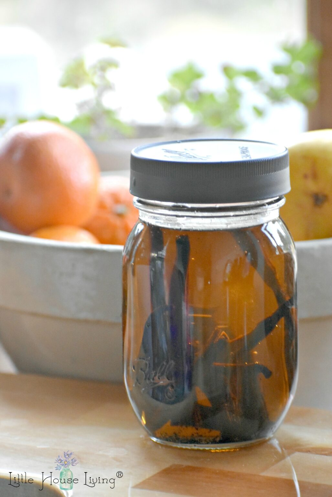

<!DOCTYPE html>
<html lang="en">
<head>
    <meta charset="UTF-8">
    <title>Vanilla Extract</title>
    <style rel="stylesheet" href="./style-pages.css"
</head>

<body>
    <h1>Vanilla Extract Recipe</h1>
    <h2>This is a frugal recipe to make vanilla extract from scratch</h2></p>
    
    <p>Now before you start sending me dozens of emails and 
        comments, I realize that some will not consider an 
        extract make without alcohol a “true extract”. 
        Whatever you believe on this, the following recipe 
        will perform exactly the same as an extract made with 
        alcohol. If you prefer to make your recipe with alcohol,
        more power to ya, that's just not what this blog post 
        is about.
    </p>
    <p>With that aside, let's jump right into this. It's so easy!</p>

    <p><h2>Ingredients:</h2></p>
    <ul>
        <li>Vanilla Beans</li>
        <li>Food Grade Glycerin</li>
        <li>Mason Jars and Plastic Lids</li>
        <li>Water</li>
        <li>Sharp Knife</li>
    </ul>
    
    <h2>Directions:</h2>
    <ol>
        <li>Fill the pint jar 3/4 of the way full with the 
            vegetable glycerin.</li>
        <li>Start by laying out your vanilla beans on a cutting 
            board. Use your sharp knife to cut them right 
            down the middle to expose the seeds. Work in 
            batches of 5 beans at a time because that is 
            how many you will put in one jar.</li>
        <li>After you've sliced all the vanilla beans lengthwise,
             cut them in half and place them in the jar. 
             I use a pint-size jar for 5 vanilla beans.</li>
        <li>Fill the jar the rest of the way with water. 
            Leave about 1/2 inch headspace in the jar so you 
            have room for the liquid to move when you shake it. 
            Put a plastic screw-on lid on the jar. I use the 
            filtered water from my Berkey to do this.</li>
        <li>Place the jars in a cool, dark place, such as a pantry 
            shelf. For the first week, shake the jar a few times 
            a day to start to get the vanilla seeds moving in 
            the liquid. After the first week, remember to shake 
            the jar at least once or twice a week.</li>
    </ol>

</body>
</html>